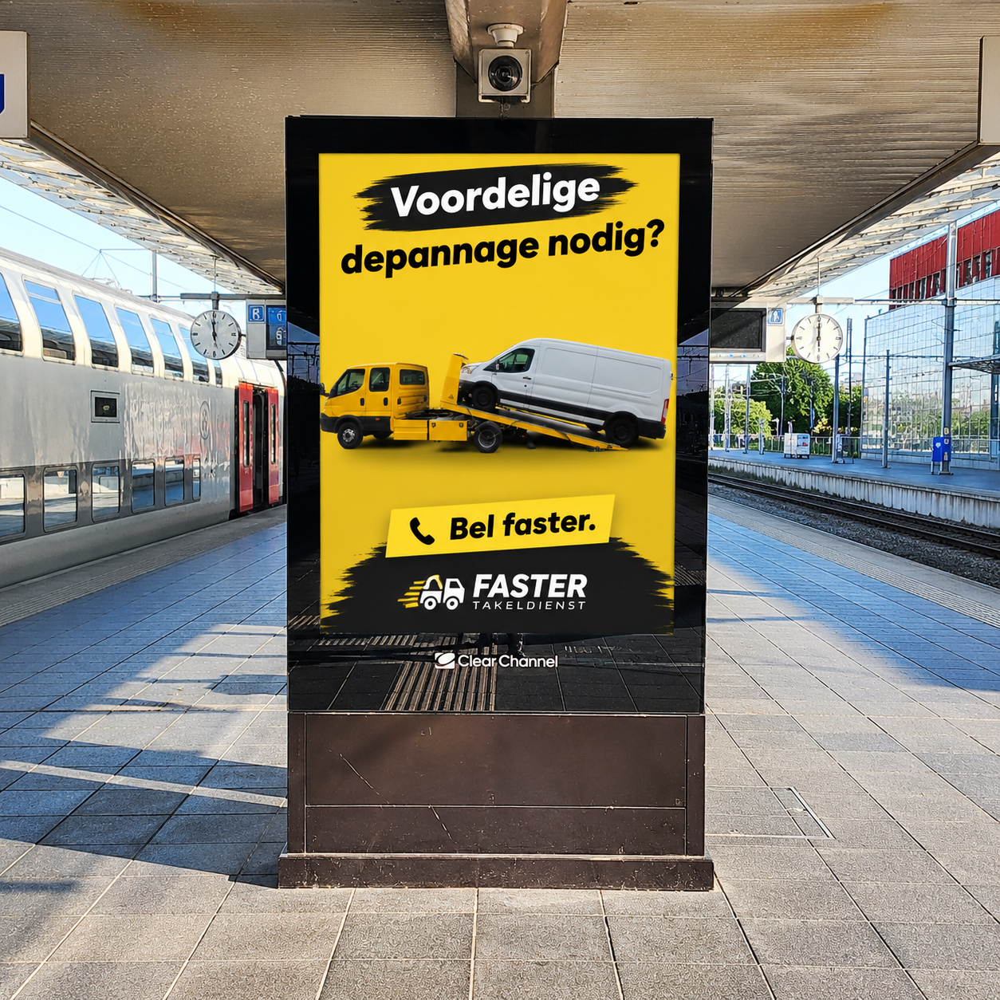

01
Breakdown assistance
Flat battery, starting problems, a flat tyre, locked out and other roadside issues.
Breakdown, accident or a transport job? Faster works out what's actually needed first, then sorts the right solution. A clear price agreed upfront, locally in Antwerp and for transport across Flanders and Europe.


Need help urgently? WhatsApp is fastest, or call us directly. Not urgent? Fill in the form below and I'll get back to you as soon as I can.
A wide range of services, but always one point of contact. We work out what's needed together.
Flat battery, starting problems, a flat tyre, locked out and other roadside issues.
After a breakdown, accident, fire or serious damage: safe recovery and transport.
To a garage, home, port, buyer or seller. Locally and internationally.
For vehicles that need extra capacity and a tailored approach.
With the right equipment and experience loading heavy machinery.
France, Spain, Germany, Italy, Ireland, the UK and further afield.
No standard answer. I listen first, then advise, then sort it.
Location, situation, make and model, and how urgent it is.
I work out what's needed and give you a clear price upfront.
I come myself when I can, or bring in a trusted partner.
Put your hazard lights on, put on a hi-vis vest if you can, and set out warning signals. If you're on a motorway or dual carriageway, get behind the barrier when it's safe to do so.
The situation isn't always simple. The solution doesn't have to be either.
Our own vehicle, real jobs, real vehicles. More stories from the road will be added here later.


Years of experience in the motor trade, my own equipment and a network of independent recovery operators.
Before Faster, I already worked in the motor trade and used to work on cars myself.
Flatbed plus underlift, suitable for cars, vans and heavy equipment.
A network of small, capable independent operators who can step in.
For the full list, see Google.
“Very satisfied, they were on site within 15 minutes and the price is simply brilliant!!! Definitely recommended!!!”
“Perfect service. Available even at 1am. There within 20 minutes. And for a good price too. Very satisfied!”
“Someone who knows his job well, very friendly driver, professional assistance, thanks for being quick 👍”
“Absolutely amazing service!!! I was stuck with my girlfriend after a big rabbit hit my bumper and the coolant leaked out in the middle of a forest, and the fastest way to get my Audi A5 to a repair shop and us to the hotel was with these guys. Very kind and professional, they took us to the hotel too, and the price was very reasonable considering the time. Thank you 🫶”
“Wow, super good service! Really quick to arrive and everything was handled very professionally. I had to call them at night and they were there immediately, a real weight off my mind. The car was towed very carefully and safely without a scratch. It's amazing that these guys are ready to help 24/7. Big thanks to the team, highly recommended if you get stuck!”
“Really efficient service, good communication and very friendly, safe driver, who also spoke great English! Transported us and our car from Reims to Calais... we even managed to get the earlier shuttle. Highly recommend 👌”
“Excellent service, very friendly driver, thank you so much”
“Broke down on a Sunday in Breda and got help straight away. Fast, professional and friendly recovery service.”
“Super fast service and very friendly!”
“Super fast turn up days and the price was as agreed, no fiddling.”
“I was stranded on the motorway; it was very dangerous with my wife and children. They were on the scene very quickly and the cheapest one available at the time. Thank you very much.”
“Top service! These people are very professional in their service. We are very satisfied!”
Choose your town and see how Faster can help there.
France · Spain · Germany · Italy · Austria · Switzerland · United Kingdom · Ireland
Call Faster — 03.375.67.37Practical information, no marketing waffle.
Call us directly. We'll work out what's needed straight away.